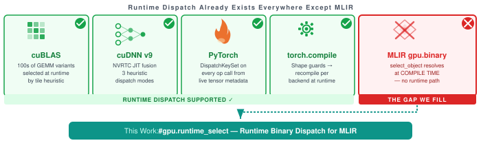
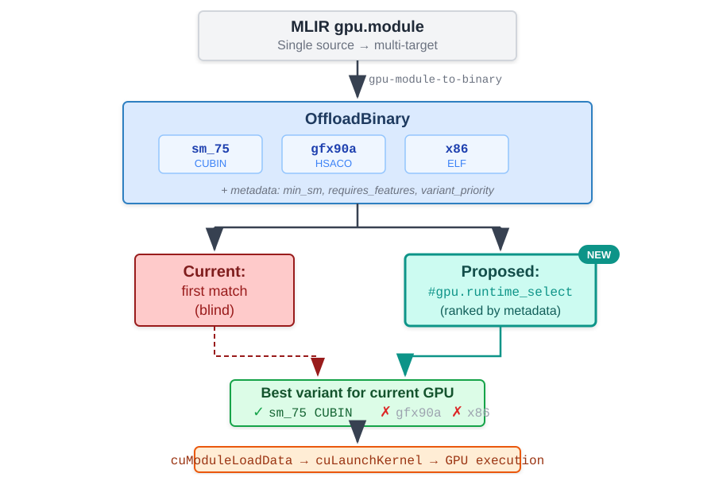
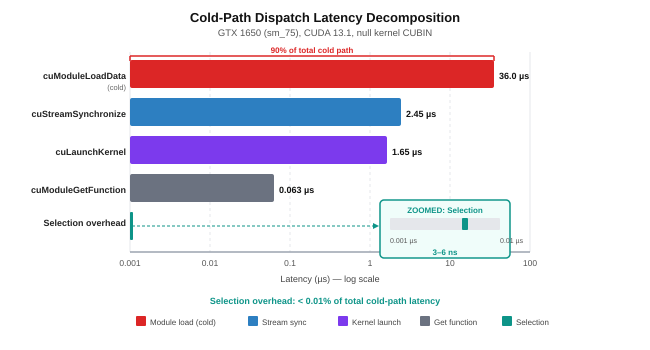
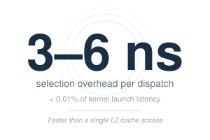
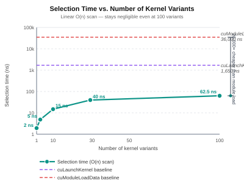
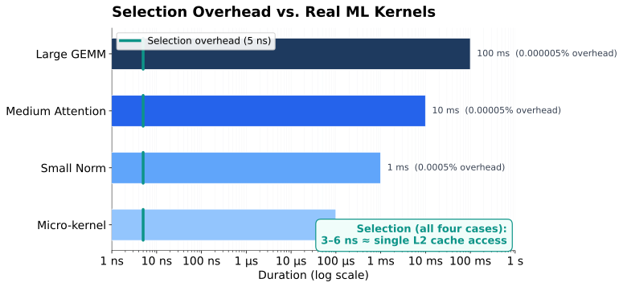

#gpu.runtime_select DesignMLIR compiles one gpu.module to 3 GPU vendors. OffloadBinary carries N device images. But at runtime, the offload stack picks the first compatible image -- no metadata vocabulary, no published measurement, no "best-compatible" mechanism. We fix all three.
Since Aug 2025, MLIR compiles NVIDIA + AMD + Intel GPUs in one pipeline. The compile-time half is done. The runtime selection policy is not -- #gpu.select_object resolves at compile time only.

liboffload loads first compatible binary -- explicitly defers ranked selection
isMetadataCompatible() merged -- checks triple + arch only
The status quo: N build pipelines per vendor, 3x storage & CI, every framework reimplements dispatch, no published latency data. We fix all of this.

| Key | Tier | Example | Semantics |
|---|---|---|---|
| min_sm | MUST | "75" | Min CUDA SM; rejects if device < value |
| min_gfx | MUST | "gfx90a:cdna2" | Min AMD GFX within ISA family |
| requires_features | MUST | "tensor_core,bf16" | Named tokens; rejects if absent |
| variant_priority | MAY | "10" | Higher = preferred among compatible |
| variant_tag | MAY | "optimized" | Label: generic / optimized / fallback |
Backward-compatible: Missing keys = no constraint. Old runtimes ignore unknown keys.


#gpu.runtime_select// Compile once, 3 vendor binaries, pick best at runtime gpu.binary @kernels <#gpu.runtime_select< strategy="rank_by_priority", fallback="cpu">> [ #gpu.object<#nvvm.target<chip="sm_75">, bin="...cubin...">, #gpu.object<#rocdl.target<chip="gfx90a">, bin="...hsaco..."> ]
launchKernel() loads from @kernels_module_ptr -- identical codepath to SelectObjectAttr. Zero hot-path overhead after one-time selection.
| Operation | Median | p99 |
|---|---|---|
cuModuleLoadData cold | 36.0 µs | 111.3 µs |
cuModuleLoadData warm | 10.0 µs | 16.3 µs |
cuModuleGetFunction | 60 ns | 61 ns |
cuLaunchKernel | 1.6 µs | 3.5 µs |
cuStreamSynchronize | 2.5 µs | 3.6 µs |
| Hot-path total | 4.1 µs | 7.1 µs |
| Selection overhead | 4-6 ns | — |


cuModuleLoadData is ~90% of total cold dispatch (36.0 µs of ~40 µs). Selection is noise-floor (<0.01%).#gpu.select_object.global_ctors, hot path is a single pointer load -- same pattern as the dynamic linker's PLT, now for cross-vendor GPU binaries.